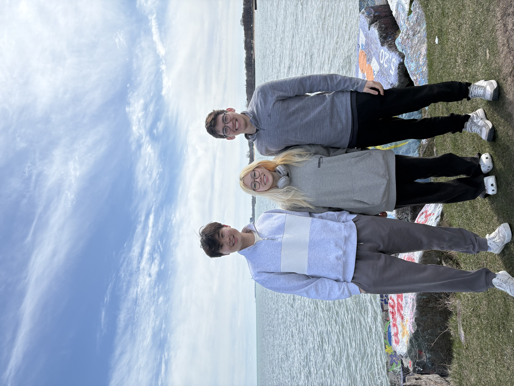
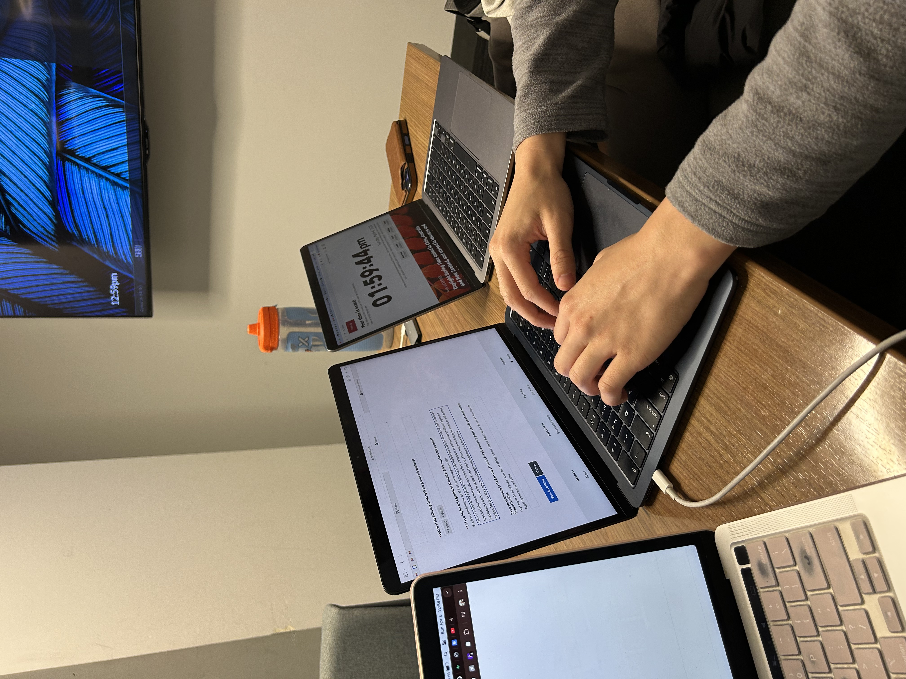
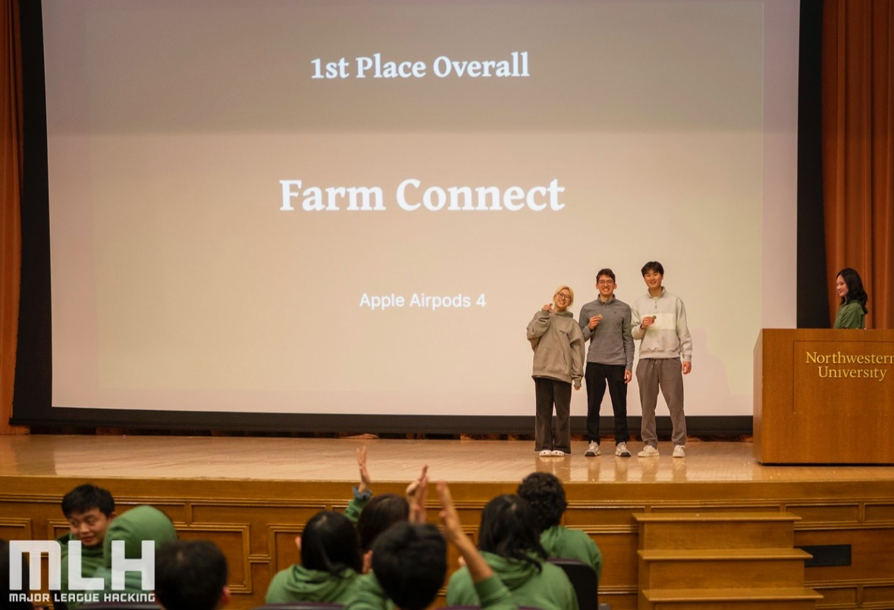
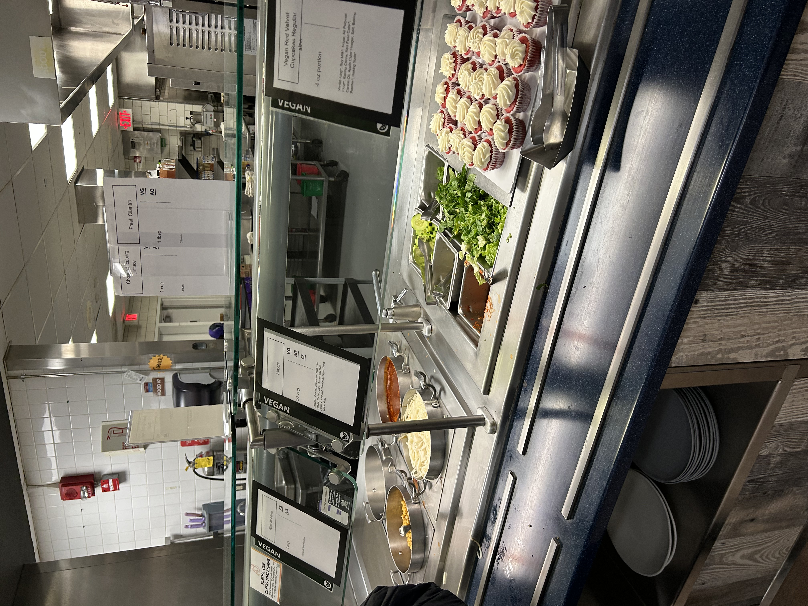
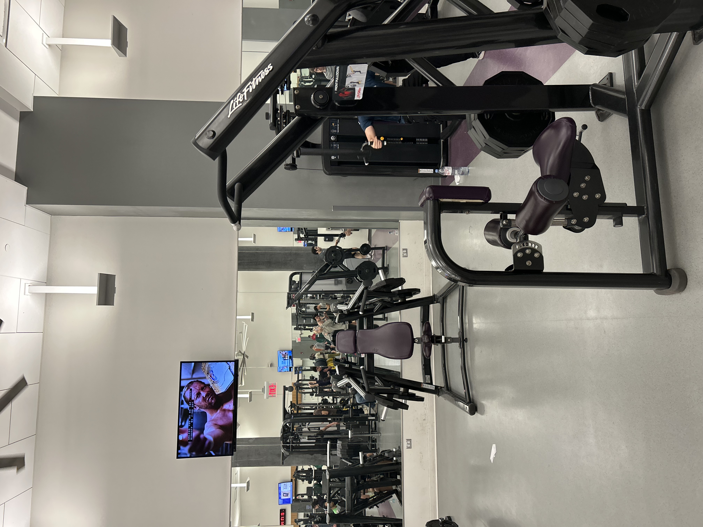
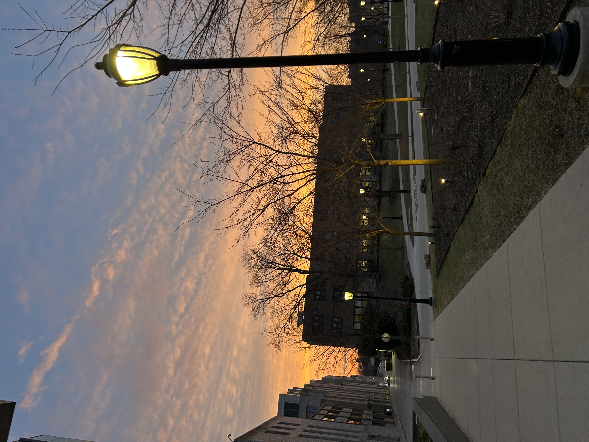

I won my first and only hackathon ever attending completely alone and here’s how it went down.
Backstory
I asked my intern friends at the time to register with me, but no one did and I only found out the week before the Hackathon. I have never felt more betrayed in my life, but I decided to attend alone anyways, fully accepting that I’m probably going to have to solo this. I attended the opening ceremony alone, feeling VERY anxious surrounded by all the unfamiliar faces, and looking like a loner, but also slightly excited by the people that I might get to meet.
Finding a group
The event managers put everyone who were looking for group members into 1 singular classroom. I mingled around, trying to find others who were not trying to win, just people who were trying to learn like me. However, most of them seemed very competitve, some had even had full pledged ideas and execution which honestly to me seemed like an easy choice here, to have someone already planned out the bigger mental bulk of the hackathon and we’d just have to execute the plan, but their ideas didn’t really align with what I had in mind. I was also quite intimidated by the competitiveness and afraid of letting them down, not that it was the reason why I backed off, but it did make me feel like a misconnection between dynamics.
I ended up talking to a majority of the people in that room, still not feeling a connection with anyone. Time was running out, and many people had formed their groups and left the room already. Eventually there was only a handful more people in the room. I started talking to this freshman and sophomore duo who seemed like they were already friends. I didn’t really get to speak much to them besides their experience, before the host in the room starts kicking people out. I decided that I really don’t have a choice at this point, it was either this duo or no team at all. With me joining their group, we would only be a size of 3 and the max number of people you can have is 4, but I decided that it’s probably still better to have some team members than not, since I had quite literally never done a hackathon before.
Meet Ben and Jefferson, literally the best first hackathon teammates I could ever ask for. We quickly brainstormed ideas and divided responsibilities. We spent at least the first 3-4 hours figuring out how to connect our frontend (which we used vercel for) to our backend. I thought we were pretty much not even going to have anything to submit by the end, but after some preserverance and lots of research, we finally got over that hump. Tasks got a lot clearer after, it felt we just climbed over the first obstacle on our way to the top of the mountain and can somewhat see some sunlight now.

Jefferson on the left and Ben on the right
Progress
I had learned so much in such a short amount of time, I had never integrated LLM models, or worked in a group setting so similar to start ups. It was very refreshing, and so differently than if I were to work on a group project in classes. People’s motivation here is to win and learn, fueled by passion for technological innovations, not some obligatory homework project assignment to pass the class.
I created a board to keep track of our responsibilities which we basically worked parallel aside each other for another 6-9 more hours. The main functionalities of our idea was prioritized of course. It was getting pretty late (2-3 AM) and the results needed to be submit by sometime in the morning. I was prepared to stay at the campus all night, but we agreed to get some sleep and finish the rest in the early morning.
I woke my best friend up mid sleep to ask last minute if I could stay over since she lived 20 minutes in comparison to my 40 minutes drive home, and of course with no hesitation she said yes. I would like to think that this played a major part in my brain recovery for the next morning, so I definitely appreciated all the support I received.
In the morning, we continued to work on our functionalities, finalize our project and record the demo. Of course we last minute realize many things that were done incorrectly, or were not properly functioning but there was simply not enough time to do it all with just the 3 of us. We tried our best to fix any of the gaps, and we submitted it exactly a few seconds before the due time. The entire time I was anxious doing the voice over, demoing and then slowly watching the progress bar while uploading the video.

Results
There are a total of 10 teams who gets to move on to second round, in which they will have to present a live demo to the judges and other candidates. The judges were still reviewing all projects past the deadline and results were getting delayed. We waited a few hours for the results, but I thought for sure there was no way we were making it. After some time, My teammates decided to nap since none of us really got enough sleep, so I decided to just get a head start on getting home.
10-20 minutes into my drive, the results got announced and I see our name on the list of teams that gets to move on to the second round. I thought wow there is no way this is happening, I called my teammates to wake them up and asked if I should turn around for the round 2 live demo. They agreed that it’s better if we were all present so I quickly rushed back. The event was already behind on schedule, so everything felt slightly rushed. I came in full of adrenaline, very out of breath and felt like I was not fully prepared for presenting on the stage full of judges and other intelligent participants but we got on and we presented exactly like how we rehearsed for our demo.
After we presented, there was another period for judges to review all presentations. We were losing hope within every second, and we were prepared to walk out with nothing. They announced the special track winners (such as best usage of ai, popularity vote, etc), which there was at least 5-7 winners and we were not announced for any of them. Then they started to announce third and second place, which our team still has not been called at all yet and I thought for sure like wow. we won nothing at all? did I drive back for nothing? Then, when it finally got to first place and they called our name, all 3 of us were in disbelief.

Takeaways
I felt like this was the confirmation I needed, I wanted to be bold and brave, try something out of my comfort zone just to challenge myself both academically and personally. We had really form the group the most last minute way possible, trauma bonded over our project, and all the hours and efforts paid off in the end.
We had bonded so fast and so much in such a short period of time. I was nervous that I might feel excluded (being a girl, and also a senior who does not go to this school), but we did almost everything together. They slided me in the dining halls (for free of course), we worked out together, walked around campus, it truly adds to the group dynamic. I was super lucky finding my group, experiencing the best possible case scenario.



If you want to read the technical aspects of this project, you can view it here: